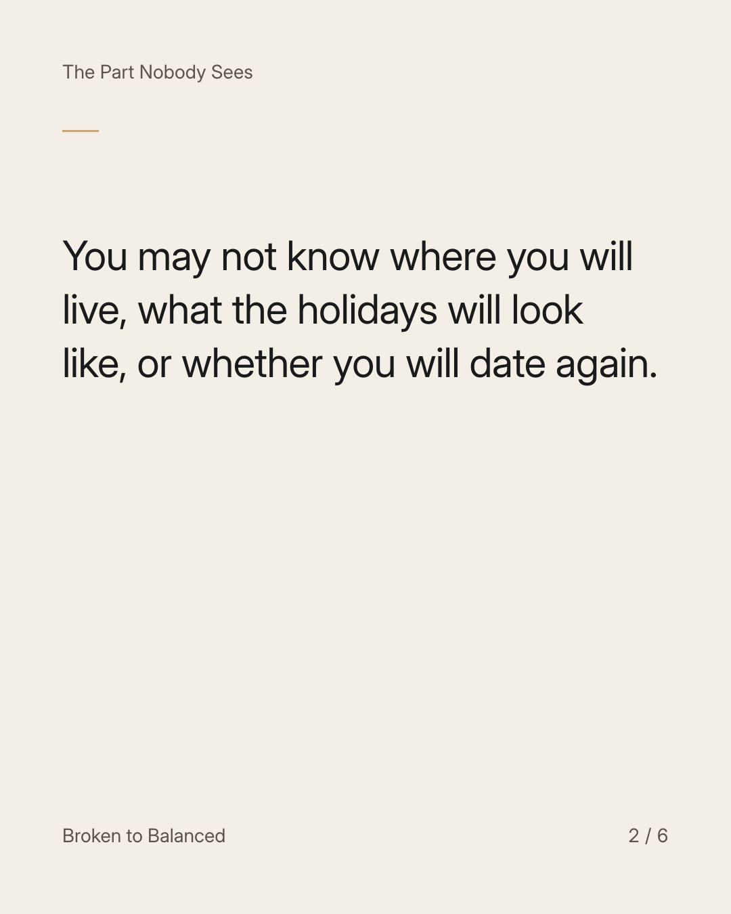
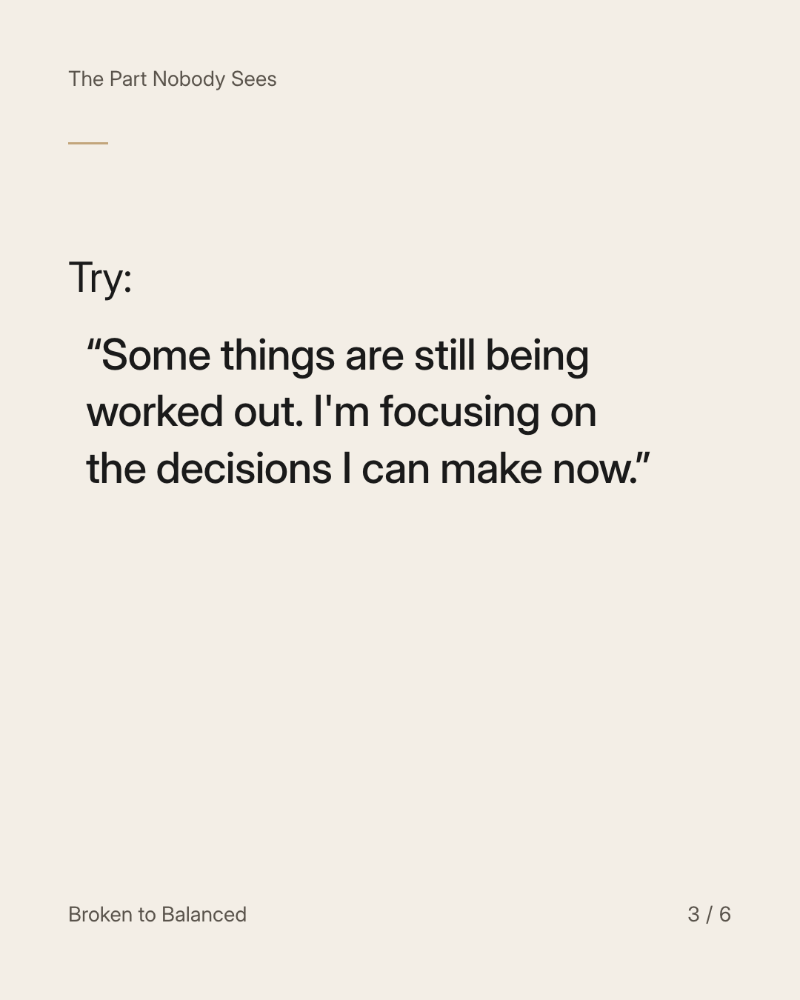
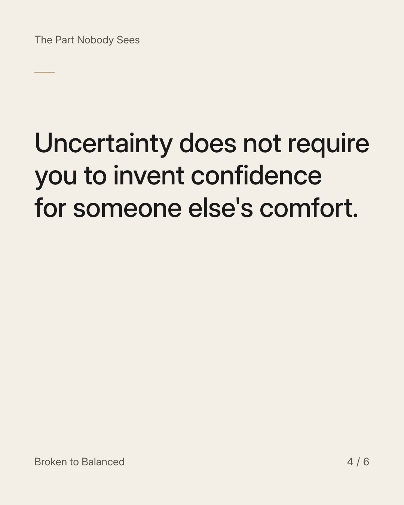
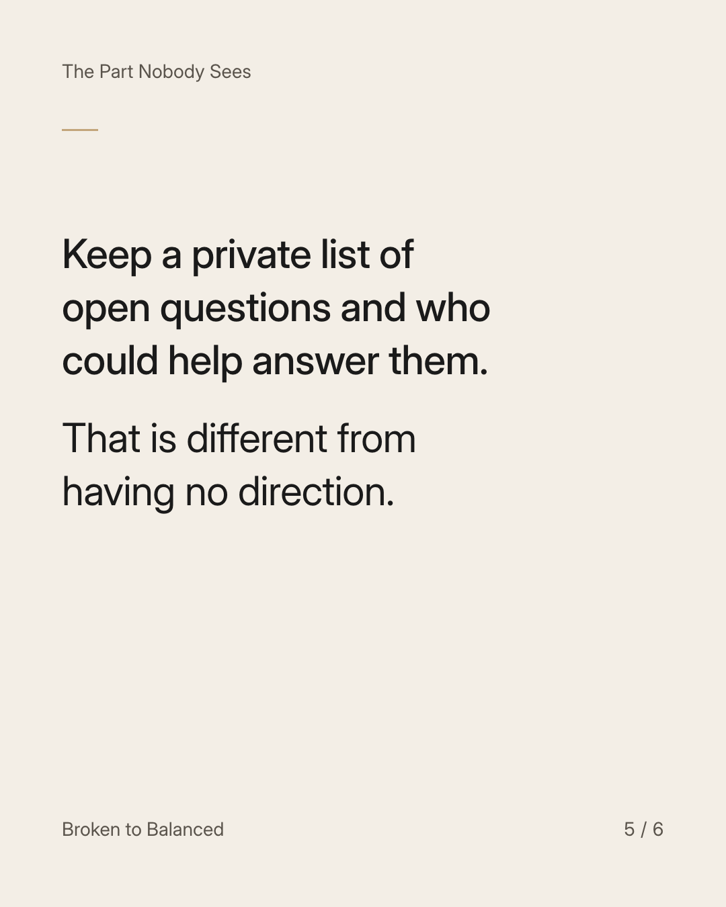
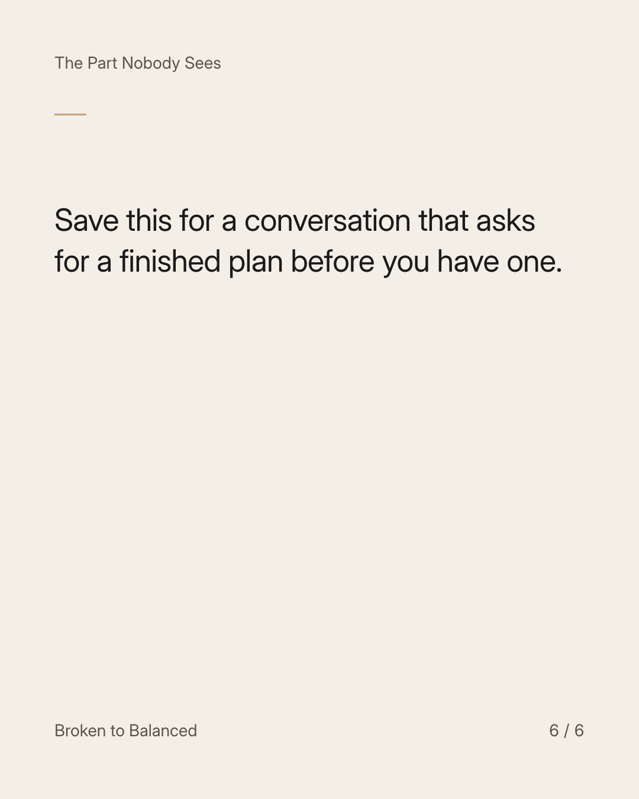

Exact text and accessibility text
You can change your answer when people ask about your future.
Slide 1 of 6. You can change your answer when people ask about your future.


Exact text and accessibility text
You may not know where you will live, what the holidays will look like, or whether you will date again.
Slide 2 of 6. You may not know where you will live, what the holidays will look like, or whether you will date again.


Exact text and accessibility text
Try: “Some things are still being worked out. I'm focusing on the decisions I can make now.”
Slide 3 of 6. Try: “Some things are still being worked out. I'm focusing on the decisions I can make now.”


Exact text and accessibility text
Uncertainty does not require you to invent confidence for someone else's comfort.
Slide 4 of 6. Uncertainty does not require you to invent confidence for someone else's comfort.


Exact text and accessibility text
Keep a private list of open questions and who could help answer them. That is different from having no direction.
Slide 5 of 6. Keep a private list of open questions and who could help answer them. That is different from having no direction.


Exact text and accessibility text
Save this for a conversation that asks for a finished plan before you have one.
Slide 6 of 6. Save this for a conversation that asks for a finished plan before you have one.
Exact caption
Plain-text fallback: select and copy the caption.